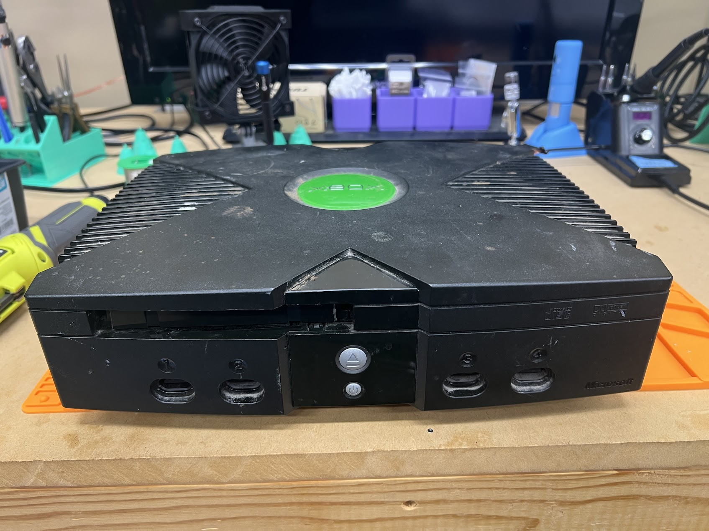
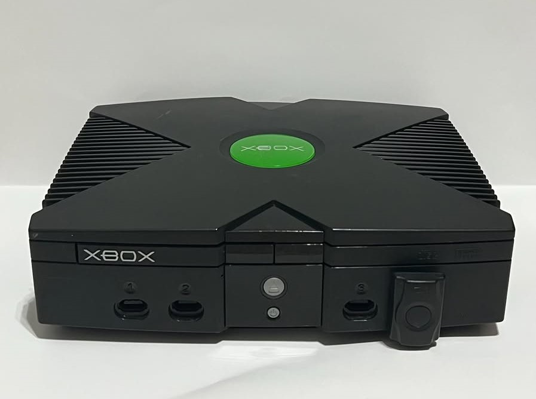

About Me
Hey there — I’m Jared, the guy behind JB Old Skool Games. This isn’t a big repair company or a commercial shop — it’s a personal passion project that grew from my love of the original Xbox and the joy of seeing old hardware come back to life.
I’m based in Huntsville, Alabama, and I primarily serve the local area, working with fellow retro gaming enthusiasts who want to keep their original Xbox consoles running strong.
Each console I work on gets the same care and attention I’d give my own collection. My goal is simple: to help keep these amazing machines alive and running for another 25 years — whether it’s fixing failed capacitors, cleaning out years of dust, or restoring the original look and feel of your system.
Thanks for stopping by, and I hope this site helps you learn a bit about why these consoles are worth saving — and how we can keep them going strong.
What I Do
- 🧰 Full system cleaning and restoration
- 🔋 Capacitor replacement and trace repair
- 💿 DVD drive repairs and replacements
- 💡 Console mods — Softmodding, upgraded harddrive, extra fans, and more
Whether it’s restoring the heart of the console or adding a personal touch, I aim to bring each system back better than new.
Why the Original Xbox?
The Original Xbox was a console ahead of its time — powerful, moddable, and built like a tank. Two decades later, these systems deserve a second life. There’s something special about hearing that startup chime again and knowing it’s running stronger than ever.
Before & After


Check out the Gallery for more transformations.
Reviews From Happy Customers
Let’s Keep It Alive
Every restored console is a piece of gaming history saved from being forgotten. Together, we can make sure the spirit of early 2000s gaming keeps shining bright — one Xbox at a time.